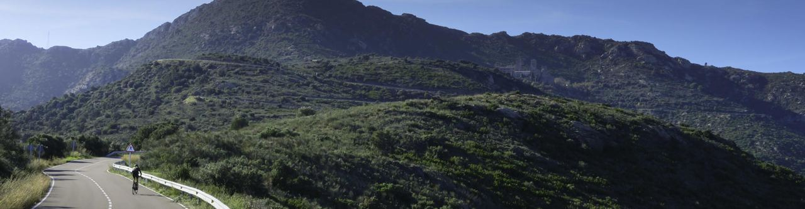

Ruta · Roses
Ruta circular de bicicleta de carretera: Roses - Port de la Selva - Roses, vorejant la serra de Rodes . Per carretera estreta, però en bon estat, rodarem l'interior de l Parc Natural del Cap de…